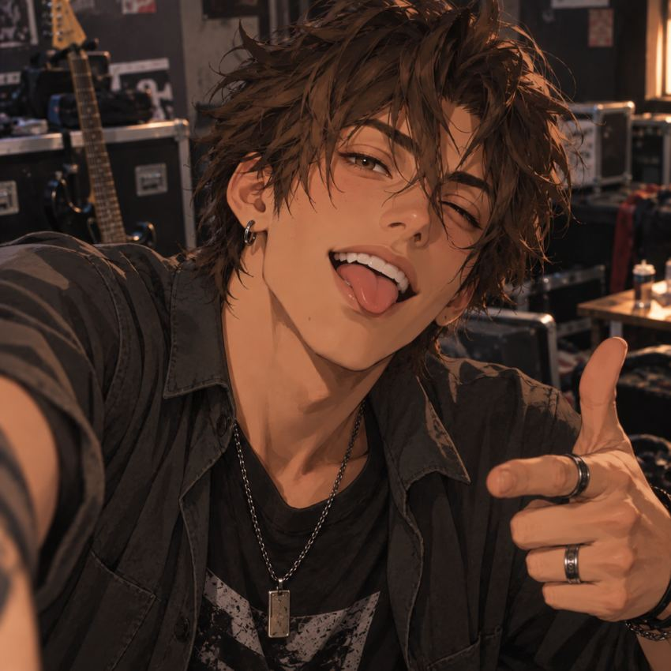
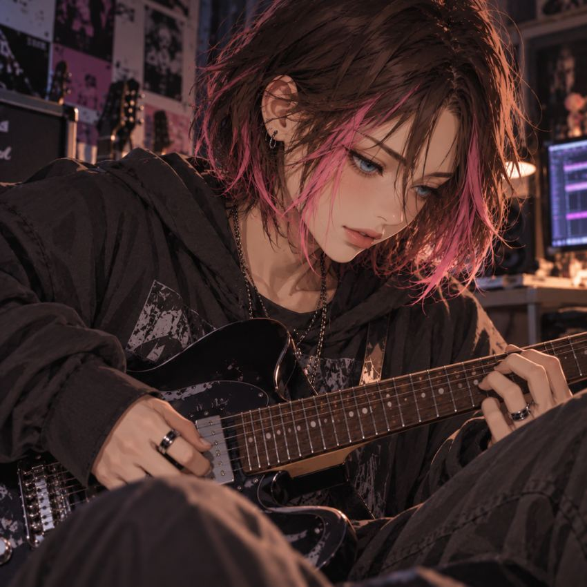

C’est une de ces journées d’automne où la pluie avait décidé de montrer au monde entier qui serait la star aujourd’hui. Depuis qu’elle s’était réveillée, Mira n’avait pas vu pointer un rayon de soleil entre les nuages gris. D’ordinaire, le plic-ploc de la pluie sur les carreaux l’apaisait. Il y avait quelque chose d’hypnotisant à l’écouter. Mais ce matin, Mira essayait surtout d’éviter la déprime. Il pleuvait sans interruption depuis trois jours et la jeune femme n’en pouvait plus. Ceci associé à son syndrome de la page blanche qui n'en finissait pas de mettre sa patience à l'épreuve la rendait particulièrement irritée.
Dans ce genre de cas, elle se rendait toujours au même endroit : « Chez Kraz ». C’était un petit café à peine plus grand que son appartement mais où l’on servait le meilleur café de la ville. Il faut dire que le gérant était un passionné et qu’il faisait venir son café des meilleures plantations du monde pour travailler le produit avec respect et délicatesse. On pouvait le sentir à la première gorgée. Mira avait espéré que changer d’environnement lui permettrait de se changer les idées et de retrouver un brin d’inspiration. Au lieu de ça, elle s’était retrouvée à traîner sur Prism comme tous ces gens qu’elle considérait comme des zombies à toujours scroller sur leur téléphone.
 Mira
Mira
Luca
Len@miraaa.jbl Même le meilleur café du monde ne peut réveiller mon imagination… 😞
@go_rowan Grosse séance jambes aujourd’hui ! 💪🏼
@kay.ontheroad Le monde est trop vaste pour passer sa vie à regarder le même horizon.
@hollowstreet.off Répétition… 🎸
Mira prit une nouvelle gorgée avant de poser son téléphone. Devant elle, sur sa table, se tenait son carnet ouvert sur une page vierge alors que son stylo n’attendait que Mira pour se mettre au travail. Il n’y avait rien à faire, l’inspiration jouait les discrètes et rien ni personne ne pouvait la déloger de sa cachette. Mira souffla, et s’avachit dans sa chaise. Son regard se posa alors vers l’extérieur et la rue. Il pleuvait encore. Ça en devenait déprimant. Les voitures se succédaient et leurs phares éclairaient les gouttes tombant sur l’asphalte. Et plus Mira fixait ce spectacle et moins elle se sentait en mesure de changer son état d’esprit, comme si chacune de ces gouttes faisait partie d’un rouage plus grand cherchant à lui ôter toute créativité. Mais, pour une hypnotisante raison qui échappait à son esprit, elle semblait incapable d’arrêter de regarder par la fenêtre du café.
« Mira ? Papa demande si tu veux du gâteau. C’est cadeau qu’il a dit. Il est au chocolat. »
C’était Kyara, la petite fille de Kraz, qui venait de sauver Mira de son rêve éveillé. La pauvre petite avait perdu sa mère très jeune et Kraz l’élevait seul. Alors, quand elle n’était pas à l’école, Kyara venait donner un coup de main à son père à son café. Cela permettait à Kraz de veiller sur sa fille tout en profitant de sa présence durant ses heures de travail. Quant à Kyara, elle se voyait régulièrement gratifiée d'une piécette ou deux en échange de son sourire.
« Oh… oui, volontiers. C’est très gentil, ma puce. Tiens, prends ça pour toi mais dis rien à ton père. »
Mira sortit alors un bonbon de sa poche qu’elle offrit à Kyara qui s’en saisit avec un grand sourire aux lèvres, ses deux incisives de devant manquantes. Mira prenait toujours des bonbons avec elle quand elle se rendait chez Kraz. C’était une bonne monnaie d’échange contre un sourire - et celui de Kyara était tellement chaleureux qu’il ne pouvait laisser les états d’âme de Mira s’installer durablement. En échange du bonbon, Kyara déposa l’assiette contenant le gâteau sur la table et s’en retourna dans l’arrière cuisine. Mira accorda un sourire à Kraz, accompagné d’un geste de la main, et ce dernier le lui rendit volontiers. Il n’y avait pas à dire, ce café était vraiment le refuge de Mira quand le moral lui manquait. La jeune femme s’apprêtait alors à goûter à ce fameux gâteau qui sentait divinement bon quand son téléphone sonna. D’un geste devenu presque un réflexe, elle s’en empara et le déverrouilla.
Quand Mira releva les yeux de son téléphone après l’avoir posé sans délicatesse sur la table, ses yeux se posèrent sur Kyara qui venait de s’installer en face d’elle, à sa table, et qui coloriait ce qui ressemblait à un dinosaure. Ou peut-être que c’était une sorte de monstre. Qu’importe, ce qui tracassait Mira c’était qu’elle n’avait même pas remarqué que la petite avait élu domicile à sa table. Décidément, ce n’était pas son genre de se perdre dans des conversations par messages mais Kay avait cette étrange faculté à lui faire perdre ses moyens.
« T’es là depuis quand, ma puce ? » finit par demander la jeune femme
« Ché pas ! »
Voilà qui l’avançait bien.
« T’aimes pas le gâteau ? T’as rien mangé » rajouta la petite fille sans même lever les yeux de son coloriage.
« Quoi ? Ah oui, le gâteau. J’attendais de reprendre un café avec. » Puis, se tournant dans la direction du barista : « Tu peux me remettre la même chose s’il te plaît Kraz ? »
Kraz se contenta de hocher la tête, comme à son habitude. Ce fut d’ailleurs au même moment que la petite Kyara releva la tête de son dessin, probablement satisfaite du résultat final, et toisa attentivement Mira.
« Pourquoi t’es toute rouge, Mira ? » avait-elle dit innocemment.
« Hein ? Quoi ? Mais je suis pas du tout rouge, moi ! » Bégaya la jeune femme, visiblement inconsciente du pourpre qui s’était glissé sur ses joues.
« Mais si t’es toute rouge ! Hein que c’est vrai papa qu’elle est rouge Mira ! » insista la petite fille en désignant Mira du bout de son petit index tandis que son regard se porta sur son père qui venait apporter à Mira sa boisson.
« Laisse Mira tranquille, Kyara. Combien de fois t’ai-je dit de ne pas pointer du doigt, ça ne se fait pas. Va jouer dans la réserve. »
Cette intervention salvatrice permit à la jeune femme d’au moins déguster son gâteau et son café sans devoir expliquer un embarras dont elle-même ignorait la provenance. Enfin, ignorer était un bien grand mot pour qualifier le déni dans lequel Mira se réfugiait en cet instant. Au fond, elle savait la raison de ce rouge sur ses joues. Elle ne comprenait simplement pas pourquoi elle s’était mise à rougir comme ça… Kyara, elle, croisa les bras avec un air boudeur qui amusa la bassiste d’Hollow Street. Bien décidée à dévier le sujet, Mira lui passa un autre bonbon par-dessous la table et la petite fille s’empressa de le saisir avant de regrouper ses affaires et de filer dans l’arrière cuisine comme une flèche, bien ravie de repartir avec une sucrerie.
« Attention, c’est chaud. Et ne rajoute pas de sucre si tu veux le manger avec le gâteau, ça gâcherait les arômes du café. »
« Merci Kraz ! Je ferai attention. »
Et alors que le barista retournait derrière son comptoir, il se retourna à mi-chemin pour lâcher un dernier mot à Mira.
« Y’a pas de honte à avoir, Mira ! Mais je ne crois pas t’avoir vu rougir une seule fois auparavant. » Le tout, accompagné d’un clin d'œil peu discret.
Mira essaya de sourire mais rien de moins naturel n’aurait pu se tracer sur ses lèvres. À croire que tout le monde dans cette boutique avait deviné son embarras avant elle et qu’ils lui faisaient tous remarquer.
Une fois seule, Mira s’avachit sur sa chaise, passa ses mains sur son visage et fixa le plafond peint en un doux marron. Elle se murmura alors à elle-même, comme un constat qu’il fallait exprimer : « Foutue Kay… T’es vraiment imprévisible comme fille. »
« C’est qui, Kay ? » Ajouta derrière elle Kyara, qui était revenue à la charge pour une mystérieuse raison. Probablement l’appel du sucre.
« Oh misère… »